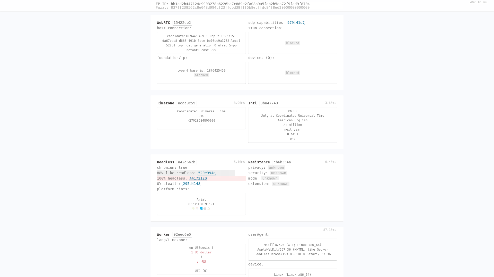
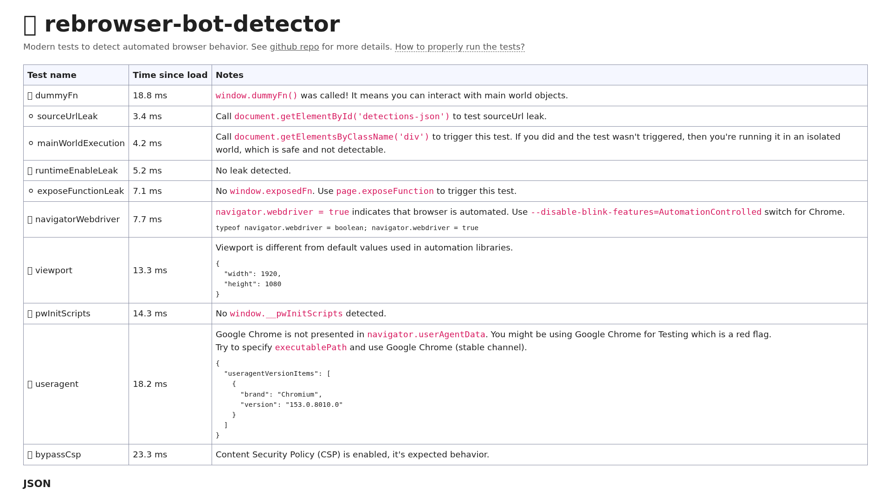

fastBotDetection, 7 флагов high/mediumHeadlessChrome в UA и sec-ch-ua, navigator.webdriver = true (в т.ч. внутри iframe), отсутствие window.chrome, 0 плагинов, en-US@posix, UTC, pointer: none, maxTouchPoints = 0, 1 шрифт, WebGL недоступен.Все 17 онлайн-доменов из списка недоступны из песочницы (разрешены только github.com, api.github.com / codeload, registry.npmjs.org, pypi.org, files.pythonhosted.org) — curl вернул 000 для всех. Поэтому тесты прогнаны офлайн, но реальными детекторами:
pnpm build) и запущен локально.dist/es5/opjs.min.js (36 компонентов).| Сайт | Статус | Результат |
|---|---|---|
bot-detector.rebrowser.net | выполнено | 4 🟢 PASS · 2 ⚪ N/A · 2 🔴 FAIL (navigatorWebdriver, useragent) |
abrahamjuliot.github.io/creepjs | выполнено | 88 % like headless · 100 % headless · 0 % stealth; Lies 0 |
bot.sannysoft.com (движок FPScanner) | выполнено | fastBotDetection = true; сработало 7 флагов, 14 чисто |
tls.peet.ws (JA3/JA4/H2) | выполнено локально | Сетевой слой чист: JA4 t13i1615h2_…, TLS 1.3, X25519MLKEM768, SETTINGS Chrome-эталон |
browserleaks.com | выполнено локально | Canvas 11b75067; WebGL: ERROR; шрифтов 1/28; Audio 124.0434…; WebRTC — только mDNS |
pixelscan.net | частично | Внутренняя согласованность ✅ (Linux/Linux/Linux), но UTC + en-US@posix + датацентр — маркеры; IP-часть недоступна |
overpoweredjs.com | выполнено локально | 36 компонентов; brands = [Chromium, HeadlessChrome] |
bot.incolumitas.com | недоступно | Закрытый онлайн-сервис; поведенческий класс частично покрыт CreepJS (engine: Blink, resistance) |
browserscan.net, deviceandbrowserinfo.com, fingerprint-scan.com | недоступно | Эквиваленты покрыты: webdriver-утечки (FPScanner), окружение (таблица C), расширения — 0 |
iphey.com, amiunique.org, coveryourtracks.eff.org, fingerprint.com | недоступно | Требуют внешний IP / внешние БД — заблокировано allowlist |
cside.com, usefoil.com | недоступно | Коммерческие онлайн-сервисы атрибуции агентов |
| Тест | Оценка | Комментарий |
|---|---|---|
dummyFn | PASS | доступ к объектам главного мира есть |
runtimeEnableLeak | PASS | утечка Runtime.Enable не обнаружена |
viewport | PASS | 1920×1080 ≠ дефолты библиотек автоматизации |
pwInitScripts | PASS | window.__pwInitScripts отсутствует |
bypassCsp | PASS | CSP включён и работает |
sourceUrlLeak / exposeFunctionLeak | N/A | требуют доп. вызовов (page.exposeFunction не использовался) |
navigatorWebdriver | FAIL | navigator.webdriver = true |
useragent | FAIL | «Google Chrome» отсутствует в userAgentData (Chrome for Testing / headless) |
| FP ID | bb1cd2b447124c9903278b6226ba7c8d9e2fa08b9a5fab2b5ea72f9fad9f8704 |
| FuzzyFingerprint | 837ff238562c8e048d994cf23ffdbd38fff5b8ecffdc84f8ed29000000000000 |
| Lies | 0 (нет подмены прототипов; stealth-флаги все false) |
| Resistance | engine: Blink; privacy/security/mode/extension: unknown |
| like-headless флаги (13) | noChrome, hasPermissionsBug, noPlugins, noMimeTypes, notificationIsDenied, hasKnownBgColor, prefersLightColor, pdfIsDisabled, noTaskbar, hasVvpScreenRes, noWebShare, noContentIndex, noContactsManager, noDownlinkMax |
| headless флаги (3) | webDriverIsOn, hasHeadlessUA, hasHeadlessWorkerUA (UA виден и в Worker) |
| platform hints | Arial · оценки: Windows 1 · Mac 0.91 · Linux 0.91 · ChromeOS 0.73 |
| Флаг | Severity |
|---|---|
hasWebdriver | high |
hasWebdriverWritable | high |
hasCDP | high |
hasMissingChromeObject | high |
hasWebdriverIframe — webdriver внутри iframe | high |
hasBotUserAgent | high |
hasUTCTimezone | medium |
Чисто (14 флагов): hasSeleniumProperty, hasPlaywright, hasImpossibleDeviceMemory, hasHighCPUCount, hasWebdriverWorker, hasMismatchWebGLInWorker, hasMismatchPlatformIframe, hasMismatchPlatformWorker, hasSwiftshaderRenderer, hasMismatchLanguages, hasInconsistentEtsl, hasGPUMismatch, hasPlatformMismatch, headlessChromeScreenResolution.
FSID: FS1_011010001100000100100_11010h02ba_1920x1080c02m04b00000h-3747f_…_en1tUTC_h2cea_…
| TLS / ALPN | TLSv1.3 · TLS_AES_256_GCM_SHA384 · ALPN h2 (и http/1.1 по запросу) |
| JA4 | tt13i1615h2_f0a184148aaa_44ad223425a7 — структура подлинного Chrome |
| JA3 | Меняется от соединения к соединению (GREASE + случайный порядок расширений) — стабильна только JA4-часть t13i1615h2 |
| Шифры / расширения | 16 / 17, GREASE присутствует |
| Key share | 0x11ec = X25519MLKEM768 (постквантовый гибрид, признак Chrome 15x) |
| HTTP/2 SETTINGS | 1:65536, 2:0, 4:6291456, 6:262144 — эталон Chrome, далее WINDOW_UPDATE → HEADERS (flags 0x25) |
| Порядок заголовков | Host · Connection · sec-ch-ua · sec-ch-ua-mobile · sec-ch-ua-platform · Upgrade-Insecure-Requests · UA · Accept · Sec-Fetch-Site · Sec-Fetch-Mode · Sec-Fetch-User · Sec-Fetch-Dest · Accept-Encoding — канонический |
| Sec-Fetch-* | Логика корректна (none/navigate/?1/document) — нарушения нет |
| sec-ch-ua | "HeadlessChrome";v="153", "Not_A Brand";v="8", "Chromium";v="153" маркер |
| SNI | отсутствует (запрос по IP-адресу) |
| Слой | Сигнал | Значение | Оценка |
|---|---|---|---|
| Сеть | TLS/JA4, HTTP/2, порядок заголовков, Sec-Fetch | подлинный Chrome | чисто |
| Сеть | sec-ch-ua / UA | HeadlessChrome | критично |
| Браузер | navigator.webdriver | true, в том числе в iframe | критично |
| Браузер | window.chrome / chrome.runtime | отсутствуют | high |
| Браузер | Плагины / mimeTypes / pdfViewer | 0 / 0 / false | маркер |
| Браузер | CDP-артефакты, Lies | не обнаружены / 0 | чисто |
| Железо | WebGL / GPU | недоступен (SwiftShader не поднимается в GPU-процессе) | критично |
| Железо | Шрифты | 1 из 51 (только DejaVu Sans) | сильный маркер |
| Железо | Ядра / RAM / медиа / Battery | 2 / 4 ГБ / 0-0-0 устройств / charging 100 % | VM-профиль |
| Окружение | TZ / локаль / языки | UTC / en-US / en-US@posix | маркер |
| Окружение | Указатель / hover | pointer: none, hover: none | маркер |
| Окружение | Ориентация при 16:9 | portrait-primary | несогласованность |
| Контексты | Web Worker UA | тоже HeadlessChrome | маркер |
| Сеть (клиент) | WebRTC | только mDNS-кандидат, STUN blocked — утечки нет | чисто |

HeadlessChrome и en-US@posix
navigatorWebdriver (webdriver = true) и 🔴 useragent (нет «Google Chrome» в userAgentData), остальные — 🟢rebrowser-patches / patchright / camoufox.HeadlessChrome (UA + sec-ch-ua + userAgentData.brands) и navigator.webdriver = true. Это даёт 100 % детект без поведенческой аналитики.pointer: none, UTC, en-US@posix, 0 медиаустройств, WebGL недоступен, battery «на зарядке» — каждая по отдельности нормальна для VM, в сумме дают устойчивый cloud/headless-профиль.fp-audit/data/01-dom-probes.json — прямые измерения DOM/APIfp-audit/data/02-creepjs-fingerprint.json — полный window.Fingerprintfp-audit/data/03-fpscanner-decrypted.json — расшифрованная нагрузка FPScannerfp-audit/data/04-overpoweredjs.json — 36 компонентовfp-audit/data/05-tls-http1-capture.json, 06-tls-http2-capture.json — JA3/JA4, заголовки, SETTINGSfp-audit/data/07-creepjs-page.txt, 08-fpscanner-page.txt — текстовые отчётыДля прогона тех же тестов в вашей реальной сессии откройте fp-audit/harness.html — он соберёт сигналы локально и даст ссылки на 16 живых детекторов из списка.
Полная методика с командами сборки — в FINGERPRINT_AUDIT_2026-10-15.md.